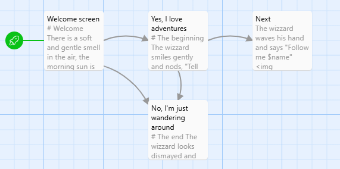

Twine Jukselapp
For å lage historier med Twine bruker vi nettsiden (https://twinery.org/) og klikker på "Use in your browser"
Warning
Merk at fortellingene du lager lagres lokalt på din datamaskin, det betyr at hvis du nullstiller nettleserdata mister du fortellingen din.
Passage
En fortelling i Twine er bygget opp av såkalte Passage elementer, disse fungerer som sider i en bok. Forskjellen her ligger i at de ulike sidene (Passage) kan kobles sammen, slik at leseren selv velger sin vei igjennom boka.

Navigasjon
For å lage koblinger mellom de ulike Passagene lager du linker ved å skrive tittelen på den mellom tegnene [[ ]], hvis Passagen ikke eksisterer oppretter Twine den for deg.
Eksempel
Eksempelet nedenfor er en Passage som gir brukeren to valg "Ja" og "Nei". Koden [[Nei->Avslutt]] viser brukeren teksten Nei men linker til Passagen med navn Avslutt
Kommandoer
Når du skal sende kommandoer til Twine setter du dette i parantes ( ).s
Variabler
Variabler i Twine starter med et $ tegn, så foreksempel vil $navn lage en variabel kalt navn.
Sette Variabler
For å lagre noe i en variabel bruker du kommandoen set: slik som i eksempelet nedenfor.
Variabeltyper
Det finnes mange variabeltyper i Twine, de vanligste er:
- Strenger: "tekst" eller 'tekst'
- Tall: 123, 3,14
- Boolske verdier: true, false
Variabeloperasjoner
Nedenfor er eksempler på hvordan du kan jobbe med variabler
Uttrykk og Operatorer
Aritmetiske Operatorer
Sammenligningsoperatorer
is // Er lik
> // Større enn
< // Mindre enn
>= // Større enn eller lik
<= // Mindre enn eller lik
is not // Ikke lik
Logiske Operatorer
Tekstformatering
Du kan formatere teksten din ved hjelp av enkelte tegn, listen nedenfor viser noen eksempler.
Logikk
If-Setninger
(if: betingelse)[
Innhold som vises hvis betingelsen er sann
]
(if: betingelse)[
Sann-innhold
](else:)[
Usann-innhold
]
(if: betingelse1)[
Innhold for betingelse1
](else-if: betingelse2)[
Innhold for betingelse2
](else:)[
Standard-innhold
]
Interaktive Betingelser
Løkker
Eksempelet nedefor skriver ut tallene 1-10